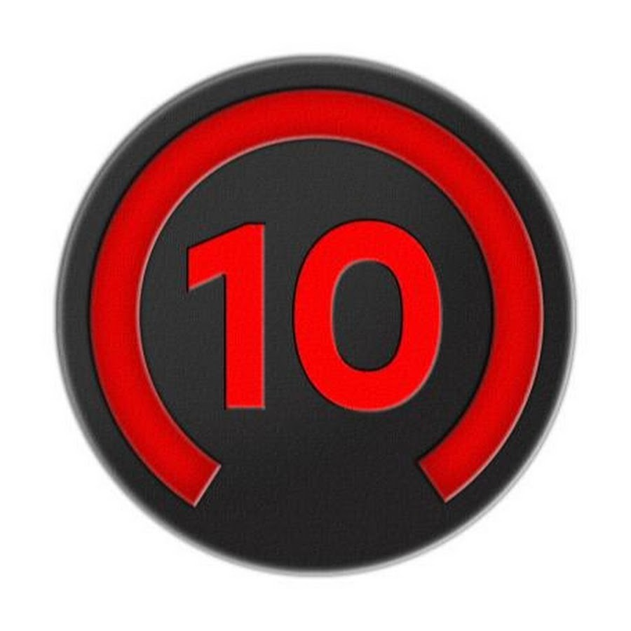

Приветствую на первой тестовой странице, посвященной различным
рангам на игровой площадке FACEIT!
На картинке ниже мы можем наблюдать
среднестатистическую аватарку гуля в Steam

Начнём же краткий экскурс.
Первый lvl Faceit.
Это самый первый уровень игрока на Faceit,
что олицетворяет его довольно слабую игру.
Десятый lvl Faceit.

На данной картинке мы видим уже практически самого опытного игрока,
который имеет десятый уровень Faceit, что олицетворяет хороший уровень игры.